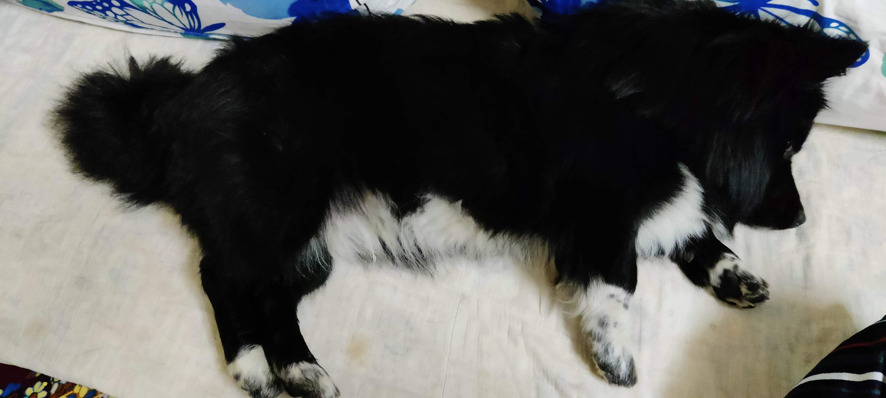

Mostly sleepy
Most dogs will sleep whenever there isn’t anything better to do. Since they don’t have smartphones, jobs, or homework, sleeping is generally the best way to spend long, tedious hours. Certain breeds are predisposed towards sleeping more (ask someone who’s owned both a lazy Bernese Mountain Dog and a working-line Border Collie). Of course, hours and hours of snoozing can also be a sign of a problem. Many diseases and age-related problems can come with a change in sleeping patterns.2 Stress and separation anxiety can also manifest in extra daytime snoozing. In most cases, a dog that sleeps for 12 or more hours per day is no cause for concern. That’s just normal! But owners should be aware that excess sleep can also be a sign of potential problems, and it's best to talk to your vet when you have these concerns.